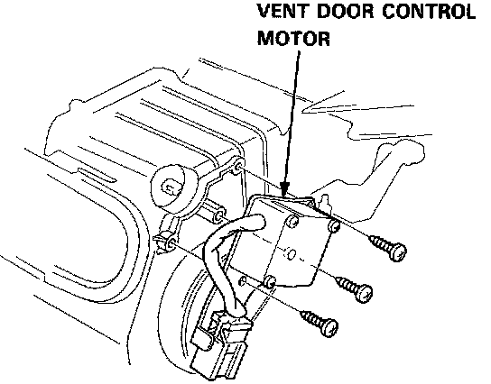

Vent Door Control Motor
Vent Door Control Motor Replacement
1. Remove the mounting screws, then remove the vent door control motor.
2. Install the vent door control motor in the reverse order of removal. Then apply battery voltage, and watch the door move.
- Make sure that the vent door moves smoothly without binding.
^ Make sure the motor doesn't pull the vent door too far.